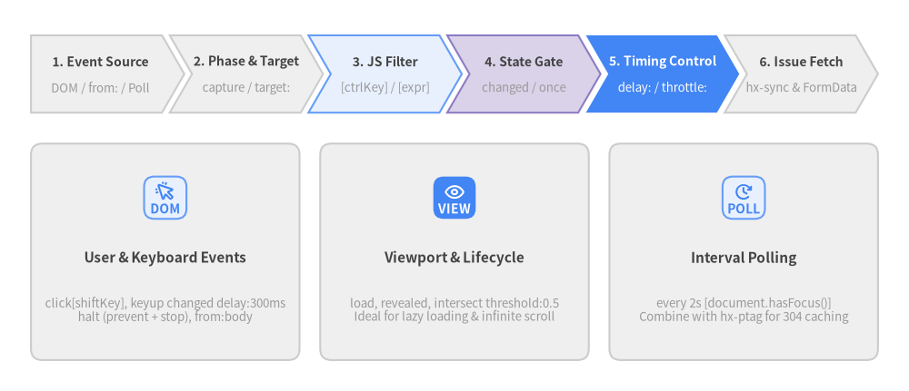
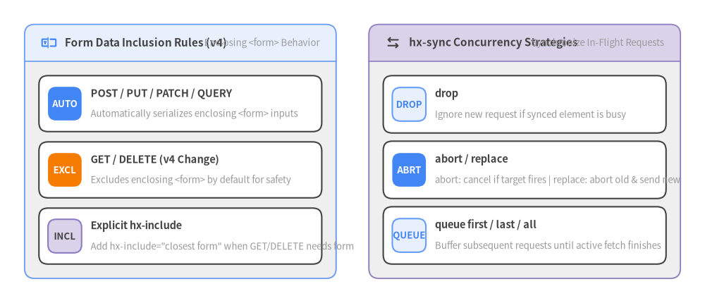

3. リクエストとトリガー (Requests & Triggers)
htmx v4.0.1 では、いつリクエストを発火させるか（hx-trigger）、どのようなパラメータやヘッダーを送るか（HCON 記法による hx-include、hx-vals、hx-headers、hx-config）、そして同時進行する複数の通信をどう調停するか（hx-sync）をすべて宣言的に制御できます。

Source Code
from drawlib.canvas import save, setup
from drawlib.icons import phosphor
from drawlib.smartarts import CardList, ChevronProcess
from drawlib.styles import Styles
setup(width=176, height=76)
# Top: 6-Stage hx-trigger Evaluation Pipeline
pipeline = ChevronProcess(
style=Styles.Neutral,
text_style=Styles.DarkBold.patch(text_size=10.0),
description_style=Styles.Muted.patch(text_size=9.5),
corner_angle=60.0,
spacing=1.5,
flat_left_end=True,
)
pipeline.add("1. Event Source", description="DOM / from: / Poll")
pipeline.add("2. Phase & Target", description="capture / target:")
pipeline.add("3. JS Filter", description="[ctrlKey] / [expr]", style=Styles.PrimaryNeutral)
pipeline.add("4. State Gate", description="changed / once", style=Styles.SecondaryNeutral)
pipeline.add(
"5. Timing Control",
description="delay: / throttle:",
style=Styles.PrimaryFlat,
text_style=Styles.WhiteBold.patch(text_size=10.0),
description_style=Styles.White.patch(text_size=9.5),
)
pipeline.add("6. Issue Fetch", description="hx-sync & FormData")
pipeline.draw(xy=(6.0, 54.0), width=164.0, height=15.0)
# Bottom: 3 Horizontal Trigger Archetype Cards
cards = CardList(
style=Styles.Neutral,
text_style=Styles.DarkBold.patch(text_size=11.0),
description_style=Styles.Muted.patch(text_size=9.5),
badge_shape="rounded_rect",
badge_style=Styles.PrimaryNeutral,
badge_text_style=Styles.PrimaryBold.patch(text_size=10.0),
icon_style=Styles.PrimaryBold,
direction="horizontal",
spacing=4.0,
)
cards.add(
"User & Keyboard Events",
"click[shiftKey], keyup changed delay:300ms\nhalt (prevent + stop), from:body",
badge_text="DOM",
icon=phosphor.cursor_click,
)
cards.add(
"Viewport & Lifecycle",
"load, revealed, intersect threshold:0.5\nIdeal for lazy loading & infinite scroll",
badge_text="VIEW",
icon=phosphor.eye,
badge_style=Styles.PrimaryFlat,
badge_text_style=Styles.WhiteBold.patch(text_size=10.0),
icon_style=Styles.WhiteBold,
)
cards.add(
"Interval Polling",
"every 2s [document.hasFocus()]\nCombine with hx-ptag for 304 caching",
badge_text="POLL",
icon=phosphor.clock_clockwise,
)
cards.draw(xy=(6.0, 6.0), width=164.0, height=42.0, align="bottom_left")
save()
3.1 hx-trigger の詳細仕様
デフォルトでは、<form> は submit、<input>/<textarea>/<select> は change、それ以外の要素は click で発火します。hx-trigger を指定すると、カンマ区切りで複数のトリガー条件や修飾子を組み合わせることができます。
hx-trigger 修飾子一覧
| 修飾子 | 記述例 | htmx v4.0.1 における動作 |
|---|---|---|
once |
click once |
要素のライフタイム中に 1 回だけ発火する。 |
changed |
input changed |
前回の発火時から要素の value が変化した場合にのみ発火する。 |
delay:<time> |
input delay:400ms |
デバウンス: イベント後 <time>（ms, s, m）待機し、待機中に次のイベントが来るとタイマーをリセットする。 |
throttle:<time> |
scroll throttle:250ms |
スロットル: 最初のイベントで即座に発火し、その後 <time> が経過するまで後続イベントを無視する。 |
from:<selector> |
refreshTable from:body |
別の要素（document, window, body, closest <sel>, find <sel>, next, previous）上のイベントを監視する。 |
target:<selector> |
click target:.row-btn |
event.target が指定した CSS セレクタに一致する場合のみ発火する（イベント委譲）。 |
prevent |
click prevent |
トリガー条件成立時に event.preventDefault() を呼び出す。 |
stop / consume |
click stop |
event.stopPropagation() を呼び出し、親要素へのイベント伝播を止める（consume は同義語）。 |
halt |
click halt |
prevent stop の短縮形（preventDefault() と stopPropagation() の両方を実行）。 |
capture |
focus capture |
バブリングフェーズではなく DOM キャプチャフェーズでリスナーを登録する。 |
passive |
touchstart passive |
スクロール性能向上のため { passive: true } でイベントリスナーを登録する。 |
[!TIP]
from:やtarget:のセレクタに空白やカンマが含まれる場合は、クォートまたは山括弧で囲みます（例:from:'form input'、from:"form input"、from:<form input/>）。
JS 条件フィルタ・ビューポート交差・ポーリング
イベント名やポーリング周期の直後に角括弧 [...] で JavaScript の真偽値式を記述すると、条件を満たすときだけリクエストを発火させることができます。
<!-- 1. Active search: debounced input OR immediate Enter key -->
<input type="search" name="q"
hx-get="/search"
hx-trigger="input changed delay:350ms, keyup[key=='Enter'] halt"
hx-target="#search-results">
<!-- 2. Viewport intersection: lazy-load chart when 50% visible -->
<div hx-get="/charts/q4-revenue"
hx-trigger="intersect once threshold:0.5"
hx-swap="outerHTML">
Loading chart...
</div>
<!-- 3. Conditional polling: poll every 5s only while browser tab is visible -->
<div hx-get="/jobs/status"
hx-trigger="every 5s [!document.hidden]"
hx-swap="innerMorph">
Checking job status...
</div>
3.2 フォームデータの送信仕様 (GET/DELETE と POST/PUT/PATCH/QUERY の違い)
htmx v4.0.1 における重要な仕様整理のひとつが、親 <form> の入力値収集ルールの一貫化です。
- 非 GET/DELETE (
hx-post,hx-put,hx-patch,hx-query): 要素を囲む親<form>内のすべての入力値を自動的に収集・送信します。 hx-getとhx-delete: 親<form>の入力値を自動的には含めません。トリガー要素自身の値（input 要素の場合）と、hx-include/hx-valsで明示された値のみを送信します。
<form id="bulk-actions">
<input type="hidden" name="workspace_id" value="ws-42">
<input type="checkbox" name="ids" value="101" checked>
<input type="checkbox" name="ids" value="102" checked>
<!-- POST automatically includes workspace_id and checked ids -->
<button type="button" hx-post="/items/archive">Archive Selected</button>
<!-- DELETE in htmx 4 requires explicit hx-include="closest form" to include form inputs -->
<button type="button" hx-delete="/items/delete" hx-include="closest form">
Delete Selected
</button>
</form>
3.3 hx-vals・hx-headers・hx-config と HCON 記法
htmx v4.0.1 では、<meta name="htmx-config">、hx-vals、hx-headers、hx-config のすべてで HCON (htmx Configuration Object Notation) が採用されています。HCON は JSON の上位互換であり、外側の波括弧 {} や単純なキー・文字列のクォートを省略して簡潔に記述できます。
<!-- HCON shorthand (no outer braces or quotes required for simple tokens) -->
<button hx-post="/items/sort"
hx-vals="column:created_at, direction:desc, limit:25"
hx-headers="X-Client-View:compact-grid"
hx-config="timeout:10000, credentials:include">
Sort Newest
</button>
<!-- Dynamic JavaScript values using the js: prefix -->
<button hx-post="/telemetry/click"
hx-vals="js:{
viewportW: window.innerWidth,
viewportH: window.innerHeight,
timestamp: Date.now()
}">
Record Viewport
</button>
| 属性 | HCON / JSON 対応 | :inherited & :append 対応 |
役割と仕様 |
|---|---|---|---|
hx-vals |
対応（js: 動的評価も可） |
対応 | リクエストに静的または動的なキー・バリューを追加する。 |
hx-headers |
対応 | 対応 | 送信する fetch() リクエストにカスタム HTTP ヘッダーを追加する。 |
hx-config |
対応 | 対応 | 要素単位の Fetch 設定（timeout, credentials, cache）。※mode は上書き不可。 |
hx-include |
拡張 CSS セレクタ | 対応 | 指定セレクタ（例: closest form, #filter-bar）の入力値をリクエストに含める。 |
hx-encoding |
"multipart/form-data" |
対応 | ファイルアップロード（<input type="file">）用にエンコーディングを切り替える。 |
hx-validate |
"true" / "false" |
対応 | フォーム送信以外の要素でもリクエスト前に HTML5 checkValidity() を強制する。 |
3.4 hx-sync によるリクエスト同期・競合制御
メールアドレスの重複チェックを行う <input> と、その親である登録用 <form> のように、複数の要素から同時にリクエストが発火し得る場合、hx-sync を使うことで「対象セレクタ」と「調停戦略」を指定して競合を防止できます。

Source Code
from drawlib.canvas import save, setup
from drawlib.icons import phosphor
from drawlib.smartarts import CardList, Panel
from drawlib.styles import Styles
setup(width=172, height=74)
# Left Panel: Form Data Inclusion by HTTP Method
left_panel = Panel(
"Form Data Inclusion Rules (v4)",
"Enclosing <form> Behavior",
style=Styles.Neutral,
header_style=Styles.PrimaryNeutral.patch(shape_line_width=1.2),
text_style=Styles.DarkBold.patch(text_size=11.0),
description_style=Styles.Muted.patch(text_size=9.5),
icon=phosphor.textbox,
icon_style=Styles.PrimaryBold,
header_variant="filled",
header_height=9.0,
)
left_panel.draw((6.0, 6.0), width=76.0, height=62.0, align="bottom_left")
l_xy, l_w, l_h = left_panel.get_content_box((6.0, 6.0), width=76.0, height=62.0, padding=(3.5, 3.5))
form_cards = CardList(
style=Styles.White,
text_style=Styles.DarkBold.patch(text_size=10.5),
description_style=Styles.Muted.patch(text_size=9.5),
badge_style=Styles.PrimaryFlat,
badge_text_style=Styles.WhiteBold.patch(text_size=9.5),
spacing=2.5,
)
form_cards.add(
"POST / PUT / PATCH / QUERY",
"Automatically serializes enclosing <form> inputs",
badge_text="AUTO",
)
form_cards.add(
"GET / DELETE (v4 Change)",
"Excludes enclosing <form> by default for safety",
badge_text="EXCL",
badge_style=Styles.AccentFlat,
)
form_cards.add(
"Explicit hx-include",
'Add hx-include="closest form" when GET/DELETE needs form',
badge_text="INCL",
badge_style=Styles.SecondaryNeutral,
badge_text_style=Styles.DarkBold.patch(text_size=9.5),
)
form_cards.draw(l_xy, width=l_w, height=l_h)
# Right Panel: hx-sync Coordination Strategies
right_panel = Panel(
"hx-sync Concurrency Strategies",
"Synchronize In-Flight Requests",
style=Styles.Neutral,
header_style=Styles.SecondaryNeutral.patch(shape_line_width=1.2),
text_style=Styles.DarkBold.patch(text_size=11.0),
description_style=Styles.Muted.patch(text_size=9.5),
icon=phosphor.arrows_left_right,
icon_style=Styles.DarkBold,
header_variant="filled",
header_height=9.0,
)
right_panel.draw((90.0, 6.0), width=76.0, height=62.0, align="bottom_left")
r_xy, r_w, r_h = right_panel.get_content_box((90.0, 6.0), width=76.0, height=62.0, padding=(3.5, 3.5))
sync_cards = CardList(
style=Styles.White,
text_style=Styles.DarkBold.patch(text_size=10.5),
description_style=Styles.Muted.patch(text_size=9.5),
badge_style=Styles.PrimaryNeutral,
badge_text_style=Styles.PrimaryBold.patch(text_size=9.5),
spacing=2.0,
)
sync_cards.add("drop", "Ignore new request if synced element is busy", badge_text="DROP")
sync_cards.add(
"abort / replace",
"abort: cancel if target fires | replace: abort old & send new",
badge_text="ABRT",
badge_style=Styles.PrimaryFlat,
badge_text_style=Styles.WhiteBold.patch(text_size=9.5),
)
sync_cards.add("queue first / last / all", "Buffer subsequent requests until active fetch finishes", badge_text="QUEUE")
sync_cards.draw(r_xy, width=r_w, height=r_h)
save()
hx-sync 戦略リファレンス
| 戦略 | 記述例 | 動作仕様 |
|---|---|---|
drop |
hx-sync="this:drop" |
同期対象の要素が通信中の場合、新規リクエストを破棄する（多重送信防止）。 |
replace |
hx-sync="this:replace" |
進行中の古いリクエストを AbortController.abort() で中断し、新しいリクエストを即座に送信する。 |
abort |
hx-sync="closest form:abort" |
同期対象（closest form）でリクエストが開始されたら、自身の進行中リクエストをキャンセルする。 |
queue first |
hx-sync="this:queue first" |
通信中に発生した最初のリクエスト 1 件のみをキューに入れ、それ以降は無視する。 |
queue last (デフォルト) |
hx-sync="this:queue last" |
通信中に発生した最新のリクエスト 1 件のみをキューに残し、完了後に実行する。 |
queue all |
hx-sync="this:queue all" |
通信中に発生したすべてのリクエストを FIFO 順で順次実行する。 |
<!-- Submitting the form immediately aborts any in-flight username availability check -->
<form hx-post="/register">
<input name="username"
hx-post="/check-username"
hx-trigger="input changed delay:400ms"
hx-target="next .status"
hx-sync="closest form:abort">
<span class="status"></span>
<button type="submit">Create Account</button>
</form>